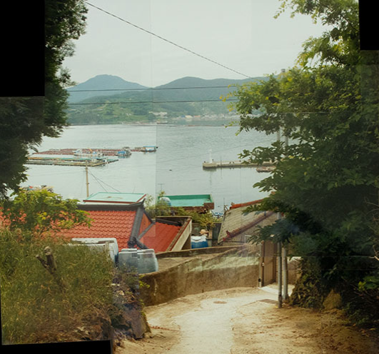

청소년전
Youth Exhibition
SCROLL

Exhibition
2024 부산국제사진제 _청소년전
부산국제사진제 청소년전은 학생들의 사진에 깊은 관심과 지원을 해왔다.
올해의 청소년전은 도시적 삶을 살아가는 평범한 고등학생의 생각과 시선,
그리고 그와 상반된 외딴 섬의 어린 아이들이 바라보는 시각을 대립해 보기로 했다.
이종현 (박건희 문화재단)
<내면>
길에서 마주치는 사람들의 목적지가 어디일지 또는 왜 나왔을지 모르지만 모두 자신만의 생각을 가지고 걷는다. 하지만 우리는 그 사람의 진짜 생각, 내면을 알 수 없기에 주로 외적인 것으로만 사람을 판단한다. 나는 외적인 것으로 누군가를 단정짓는 편견이 궁금하다.
장다희 (박건희 문화재단)
<왜곡>
사람들은 렌즈가 뱉어내는 이미지는 선택되고, 왜곡되며, 진실되지 못하다고 생각한다. 나는 오히려 그 왜곡으로 더 넓어진, 더 신비로운 세상-거짓과 진실이 무엇인지 모르게 된-을 본다.